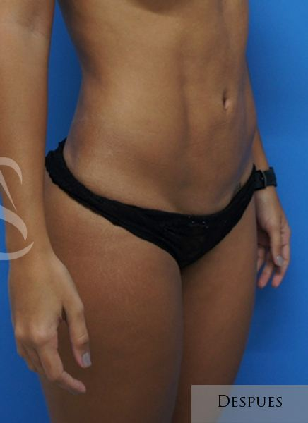
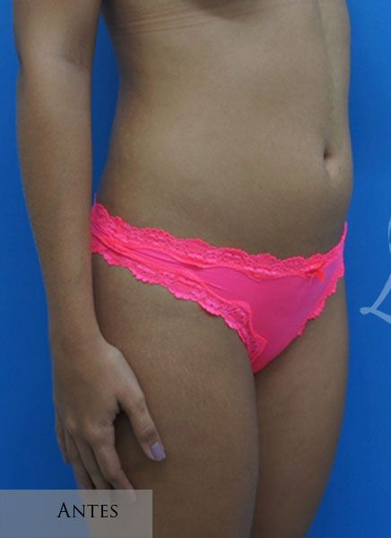
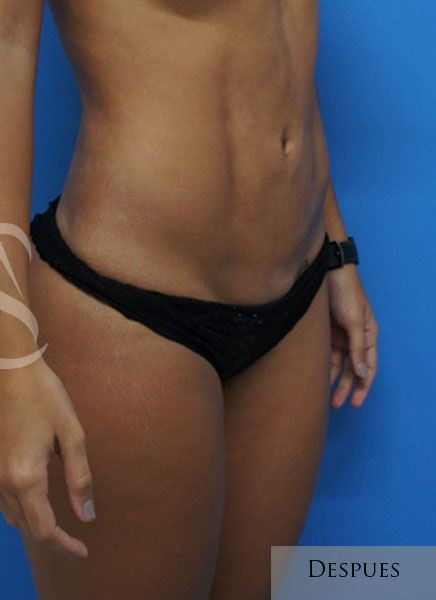
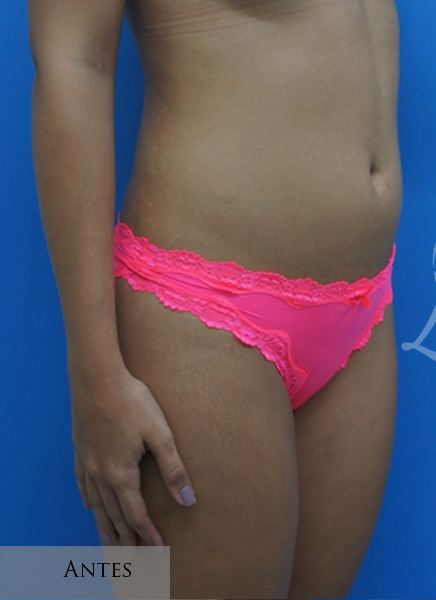
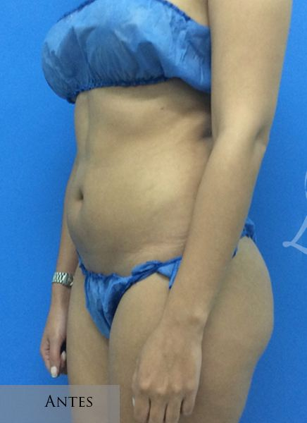
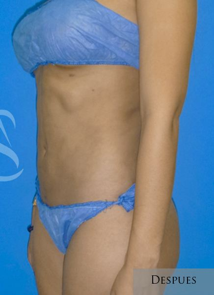
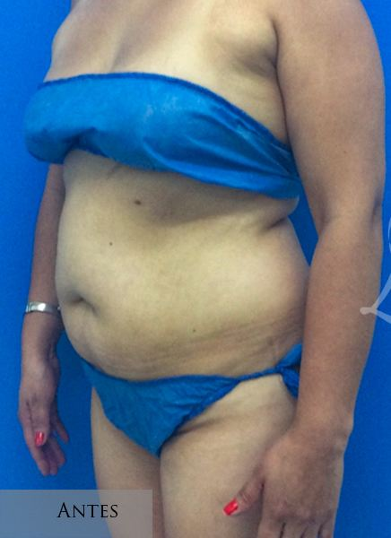
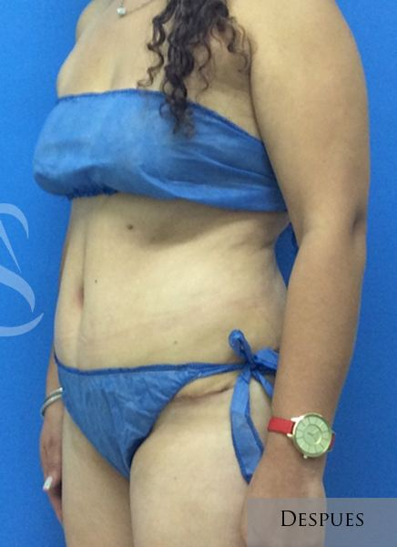

Retracción de piel y contorno corporal
La retracción de piel es un complemento de la liposucción que busca mejorar la firmeza y definición del contorno corporal. Mediante tecnologías de última generación, es posible estimular la contracción de los tejidos y favorecer la producción de colágeno, logrando una piel más firme y un resultado más armónico.
Seleccionamos la tecnología más adecuada según la calidad de la piel, la anatomía y los objetivos de cada paciente, con un enfoque personalizado y orientado a resultados naturales.

Casos de nuestros pacientes


AntesDespués
AntesDespués

AntesDespués

AntesDespuésPacientes reales del Dr. Luis Alonso Salja. Los resultados varían en cada paciente; las fotografías se publican con autorización y tienen fines informativos.
Tecnología que reafirma tu piel
Tecnología de vanguardia
Retraction®, VASER® y J-Plasma® seleccionadas según tu caso.
Retracción cutánea
Estimula la contracción de los tejidos y la producción de colágeno.
Resultados progresivos
Una piel más firme que mejora de forma gradual en los siguientes meses.
Resolvemos tus dudas
¿Tienes otra pregunta? Escríbenos y te respondemos personalmente.
Preguntar por WhatsApp¿Quién es candidato para estas tecnologías?
Son ideales para pacientes que presentan grasa localizada y desean mejorar la firmeza de la piel o prevenir la flacidez después de una liposucción. La indicación dependerá de la calidad de la piel y de la evaluación médica.
¿Estas tecnologías reemplazan una cirugía para retirar piel?
No. Cuando existe un exceso importante de piel, procedimientos como la abdominoplastia o el lifting corporal siguen siendo la mejor alternativa. Estas tecnologías ofrecen excelentes resultados en casos de flacidez leve o moderada.
¿Se pueden combinar con una liposucción?
Sí. Con frecuencia se utilizan como complemento de la liposucción para mejorar la definición corporal y favorecer una mayor retracción de la piel.
¿Los resultados son inmediatos?
Algunos cambios pueden apreciarse desde las primeras semanas; sin embargo, la producción de colágeno continúa durante los siguientes meses, por lo que el resultado mejora de forma progresiva.
¿Cómo es la recuperación?
La recuperación dependerá del procedimiento realizado. En la mayoría de los casos, es similar a la de una liposucción convencional, siguiendo las indicaciones médicas, el uso de prendas de compresión y los controles postoperatorios.
Agenda tu valoración de retracción de piel y contorno corporal
Conoceremos tus objetivos, resolveremos tus inquietudes y diseñaremos un plan que priorice tu seguridad y respete tu anatomía.